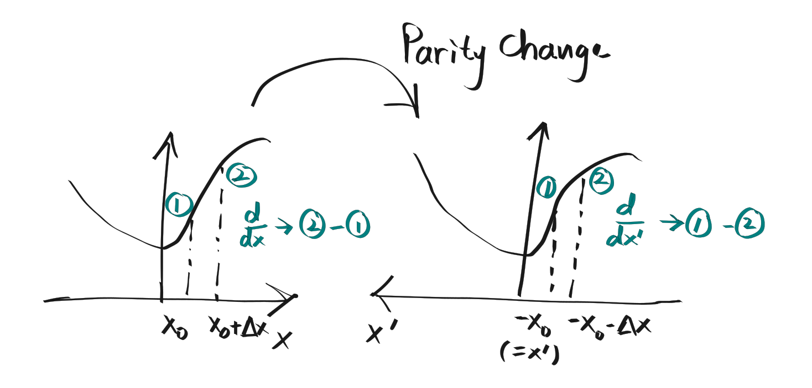

Parity
What do we mean by "a change of parity"? A change of parity really describes a change of coordinate system. We are essentially asking: if we had inverted our coordinate system, so that our new coordinate axes now point in the opposite direction as before, how will we have to rewrite the laws of our system? Note that in this (passive) picture, the physical system remains unchanged - it is our description of it that changes.
As an example, let's put aside Hamiltonians and wavefunctions for now and just focus on scalar functions $f$. Let's say we have a scalar function $f(\vec{\bf{x}})$ in our original coordinate system. If we switched to a new coordinate system in which the axes are all inverted, then the same scalar function will be described by $f'(\vec{\bf{x}}')$ in the new coordinate system. Note the meaning of the two primes. We have $f \rightarrow f'$ because in general, the functional form of the scalar function in our new coordinate system is different from that in the original coordinate system. On the other hand, $\vec{\bf{x}} \rightarrow \vec{\bf{x}}'$ because the arguments label positions with respect to different coordinate systems.
A statement that shows up repeatedly in books is: $$\vec{\bf{x}} \rightarrow \vec{\bf{x}}' = -\vec{\bf{x}}$$ Or, for some point $\vec{\bf{x}}_0$ (I think this makes it a bit easier to follow): $$\vec{\bf{x}}_0 \rightarrow \vec{\bf{x}}_0' = -\vec{\bf{x}}_0$$ This is saying is that the (physical) point (in space) that was originally labelled by $\vec{\bf{x}}_0$ in the old coordinate system is now labelled by the point $\vec{\bf{x}}_0'$ with the numerical value $\vec{\bf{x}}_0' = -\vec{\bf{x}}_0$ in the new coordinate system. In fact, this is the mathematical statement of the above intuition of "inverting the coordinate system".
Following from this definition, we must have that $f'(\vec{\bf{x}}_0') = f'(-\vec{\bf{x}}_0) = f(\vec{\bf{x}}_0)$.
We say that the scalar function is invariant under change of parity if $f$ and $f'$ have the exact same functional form. This means that to get from $f(x, y, z)$ to $f'(x', y', z')$, just add primes to every instance of $x,y,z$ in $f(x,y,z)$.
Mathematically, this corresponds to the statement: $$f(\vec{\bf{x}} = \vec{\bf{A}}) = f'(\vec{\bf{x}}' = \vec{\bf{A}}) \phantom{xx}\text{for any choice of } \vec{\bf{A}}$$ Equivalently: $f(\vec{\bf{x}}_0) = f'(\vec{\bf{x}}_0)$ for the same numerical input $\vec{\bf{x}}_0$. Combining this with the above relation gives: $$f(\vec{\bf{x}}_0) = f'(\vec{\bf{x}}_0) = f(-\vec{\bf{x}}_0)$$ Or dropping the subscripts: $$f(\vec{\bf{x}}) = f(-\vec{\bf{x}})$$ The next step: instead of asking "how will my description of the scalar field $f$ change?", I now have to ask "how will my description of the differential equations change?". The intuition we have developed above above holds to a scalar function, but in Physics we deal with laws that are described by differential equations, and these contain derivatives. Therefore, we need to look at how the act of "taking $\frac{\text{d}}{\text{d} x}$" in the old coordinate system looks like in the new inverted coordinate system.
For simplicity, we consider a one-dimensional example, the general three dimensional case follows from the same logic.

Consider the derivative $\frac{\text{d}}{\text{d} x}$ in the original coordinate system. To calculate $\frac{\text{d}}{\text{d} x}$ for some scalar function $f(x)$, we take the values of $f$ at points $x_1 = x_0$ and $x_2 = x_0 + \Delta x$, and calculate: $$\frac{f(x = x_0+\Delta x) - f(x = x_0)}{\Delta x}$$ In derivative notation, this is: $\frac{\text{d}}{\text{d} x} f(x) |_{x=x_0}$.
Now, we want to express the exact same (physical) operation, but in the coordinate system $x'$. To do so, we make the following changes: $$f(x = x_0 + \Delta x) \rightarrow f'(x' = -x_0 - \Delta x)$$ $$f(x = x_0) \rightarrow f'(x' = -x_0)$$ So the new fraction becomes: $$\frac{f'(x' = -x_0 - \Delta x) - f'(x' = -x_0)}{\Delta x}$$ Note that this fraction and the fraction above have the exact same numerical values - we are just rewriting $f$ and $x$ in terms of $f'$ and $x'$, but in both cases the quantities describe the exact same things.
The key point to note is that when we take derivatives in the new coordinates we take the value at point $1$ ($x_1$ in the original coordinates), and subtract from it the value at point $2$ ($x_2$ in the original coordinates), instead of the other way round as we did in the original coordinate system. Therefore, the next steps are: $$ \begin{align} \frac{f'(x' = -x_0 - \Delta x) - f'(x' = -x_0)}{\Delta x} &= -\frac{f'(x' = -x_0) - f'(x' = -x_0 - \Delta x) }{\Delta x} \\ &= -\frac{\text{d}}{\text{d} x'} f'(x') |_{x'=-x_0} \end{align}$$ We see that a negative sign has appeared!
Now consider a law, say $\frac{\text{d}}{\text{d} x} f(x) = f(x)$. This means that for any point $x_0$ we have: $$\frac{\text{d}}{\text{d} x} f(x) |_{x=x_0} = f(x=x_0)$$ When we perform a parity flip, the exact same law in the inverted coordinate system reads: $$-\frac{\text{d}}{\text{d} x'} f'(x') |_{x'=-x_0} = f'(x'=-x_0)$$ Or, omitting the $x'=-x_0$ (since both $x'$s have the same value of $-x_0$): $$-\frac{\text{d}}{\text{d} x'} f'(x') = f'(x')$$ There will be a new negative sign from the derivative, so the law is not invariant under a parity change. The reason is that the linear operator $\frac{\text{d}}{\text{d} x}$ is not invariant under a change of parity.
Just like $\frac{\text{d}}{\text{d} x}$, the Hamiltonian $\hat{H}$ is also a linear operator. For example, $\hat{H}$ could have the form: $$\hat{H} = f(\frac{\text{d}}{\text{d} x}, \frac{\text{d}^2}{\text{d} x^2} ,\dots) + V(x)$$ or in three dimensions: $$\hat{H}(\vec{\bf{x}}) = f(\nabla_{\vec{\bf{x}}}, \nabla_{\vec{\bf{x}}}^2, \dots) + V(\vec{\bf{x}})$$ For the $\hat{H}$ to be invariant we then require that upon replacement of $\vec{\bf{x}}$ with $\vec{\bf{x}}'$ and $\nabla_{\vec{\bf{x}}}$ with $\nabla_{\vec{\bf{x}}'}$ the new Hamiltonian: $$ \begin{align} \hat{H'}(\vec{\bf{x}}') &= f(-\nabla_{\vec{\bf{x}}'}, (-\nabla_{\vec{\bf{x}}'})^2, \dots) + V'(\vec{\bf{x}}') \\ &= f(\nabla_{\vec{\bf{x}}'}, \nabla_{\vec{\bf{x}}'}^2, \dots) + V(\vec{\bf{x}}') \end{align}$$ Note that this is just for the specific form of $\hat{H}$ above, you can have other forms of $\hat{H}$ too.
What we have discussed above is essentially the passive picture of the parity transformation. There is an equivalent way of thinking about this whole business, in which instead of inverting our coordinate system we took our wavefunction and linear operators and turned them "inside out". This is known as the active picture (please explain it more!), and is conventionally what's used in quantum mechanics. We switch to this picture below.
Connection to conservation of parity
Suppose that the parity operator $\hat{P}$ commutes with the Hamiltonian $\hat{H}$: $$[\hat{P}, \hat{H}] = \hat{P}\hat{H} - \hat{H}\hat{P} = 0$$ Then, by Ehrenfest's theorem, the expectation of $\hat{P}$, $\braket{\hat{P}}$ does not change with time.
A note should be made about the relation between $\hat{P}$ and other symmetries such as angular momentum $\hat{L}_z$. Parity is a discrete symmetry, in the sense that there is only one operation, the parity flip given by $\vec{\bf{x}} \rightarrow \vec{\bf{x}}' = -\vec{\bf{x}}$, that we can perform on our system. You cannot build a parity flip incrementally using infinitesimal operations. On the other hand, angular momentum generates a continuous group of symmetries, corresponding to rotations that can be obtained by applying the generator $\hat{L}_z$ repeatedly.
This difference, however, is not relevant to Ehrenfest's theorem. Even though $\hat{P}$ is a discrete symmetry in the sense that its transformations form a discrete group (unlike angular momentum, which forms a continuous group), its expectation value for some initial state can certainly change continuously with time! As an example, consider $\hat{L}_z$ - its eigenvalues are also discrete, but $\braket{\hat{L}_z}$ in general changes continuously over time.
With that said, let's show the following: if the Hamiltonian is invariant under a change of parity, then the parity $P$ of any parity eigenstate is conserved.
Suppose we have a Hamiltonian that is invariant under a change of parity: $$\hat{H}(\vec{\bf{x}}) = \hat{H}(-\vec{\bf{x}})$$ Loosely speaking, this means that if we were to write out $\hat{H}$ in position basis (as $\hat{H}(\vec{\bf{x}})$), and then proceeded to flip all the signs of the $x, y, z$ in the Hamiltonian (note that this includes the signs in any derivatives, if present), the form of the Hamiltonian remains completely unchanged.
Denote $\psi'(\vec{\bf{x}}) = \hat{H}(\vec{\bf{x}}) \psi(\vec{\bf{x}})$. Then $\hat{P} \psi'(\vec{\bf{x}}) = \psi'(-\vec{\bf{x}}) = \hat{H}(-\vec{\bf{x}}) \psi(-\vec{\bf{x}})$. But because of the invariance of the Hamiltonian, this becomes $\hat{P} \psi'(\vec{\bf{x}}) = \hat{H}(\vec{\bf{x}}) \psi(\vec{\bf{-x}}) = \hat{H}(\vec{\bf{x}}) \hat{P} \psi(\vec{\bf{x}})$. Therefore, we end up with the equality: $$\hat{P}\hat{H}(\vec{\bf{x}}) \psi(\vec{\bf{x}}) = \hat{H}(\vec{\bf{x}}) \hat{P} \psi(\vec{\bf{x}})$$ for any state $\psi(\vec{\bf{x}})$ implying: $$\hat{P}\hat{H}(\vec{\bf{x}}) - \hat{H}(\vec{\bf{x}}) \hat{P} = [\hat{P}, \hat{H}] = 0$$ Consequently, $\partial_t \braket{\hat{P}} = 0$.
As I am writing this, I realise that the logic behind the equality $\psi'(-\vec{\bf{x}}) = \hat{H}(-\vec{\bf{x}}) \psi(-\vec{\bf{x}})$ is rather fuzzy. If $\hat{H}(\vec{\bf{x}})$ is a scalar function then it is quite easy to convince yourself that this is indeed the case. However, $\hat{H}(\vec{\bf{x}})$ can also contain all sorts of linear operators like $\partial_x$, and it is not intuitive that the relation should still hold. The reason that this works is because spatial derivatives like $\partial_x$ behave exactly like $\vec{\bf{x}}$ under a change of parity. That is, just like $\vec{\bf{x}} \rightarrow -\vec{\bf{x}}$, we have $\nabla_{\vec{\bf{x}}} \rightarrow -\nabla_{\vec{\bf{x}}}$.